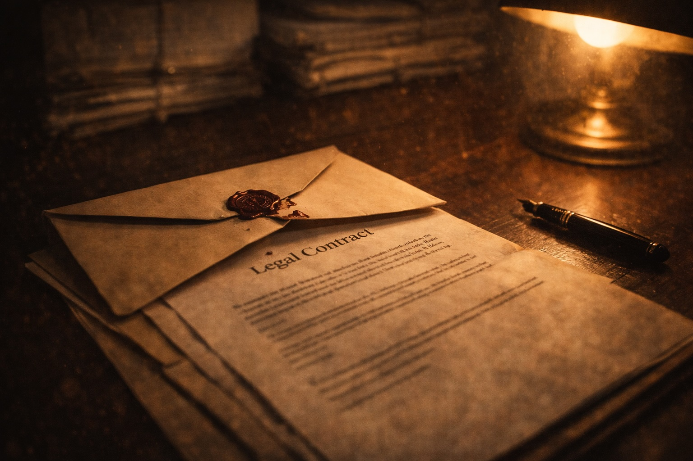

I was becoming overwhelmed with gangland crime cases, as inmates began beating a path to Nicholas Green Solicitors’ door. With the sacking of lawyers came resentment from old, established criminal practices. This was particularly the case in Manchester, where the CAT A, High Risk corridors were rife with stories of the new kid on the block, landing blows on the police.
In this climate, I did not expect to receive a call from a senior partner in a law firm in Manchester offering me a CAT A case! It stank – but I took the call from my receptionist as I was intrigued – ‘Put him through.’
I learnt his firm, at the door of a trial, had called a conflict of interest and walked from the case. ‘Who is the client?’ I enquired, and learnt it was a CAT A prisoner in HMP Strangeways by the name of Wayne McDonald. My answer, if I was sane, should have been a firm ‘No thank you’. Even with this limited information, it was obvious this was a major case and, worse, would mean dropping all my current work to concentrate my mind on R v McDonald.
I, equally, was not daft enough to believe the chance of a good result was within reach. I could see this as no more than a ‘hospital pass’ to have me fall on my arse and ruin my newfound popularity in HMP Strangeways.
However, whoever McDonald was, I sensed he was being shafted. I back up my own abilities in any legal battle. ‘Okay – I will take over’, I heard myself announcing. I indicated there was no chance of me finding a Queen’s Counsel at such short notice, so I would be seeking an adjournment of the trial.
‘Mr Green, I assured the judge I would find a new QC. I have – he is Mr Brown from a Leeds chambers.’
Wow – it had all been neatly packaged up with a bow on top, but there are no Christmases in June, however hard I wished.
I agreed to attend his Manchester office, close to the Crown Court, at 8am the following morning to collect the case papers. As I set off, little could I imagine the horrors which were about to unfold. I had booked into the Midland Hotel for three days, in the hope I would nail an adjournment – otherwise, I would be landlocked in Manchester for at least 18 days.
I met the outgoing lawyer in the boardroom of his city centre offices. I noticed in front of him was a fully completed bill of costs in R v McDonald. I smiled, as this confirmed to me his firm’s exit had not been sudden. Money is king, after all.
He pointed to a large number of boxes of material, which made me queasy. He indicated the prosecution was one into a large scale supply of Class A, with the main Crown witness being an undercover police officer. I asked why he had walked off the case? He indicated the client wanted his proof of evidence altering.
‘Why?’
‘He wanted the word ‘fake’ to appear before every reference to cocaine, Mr Green.’
‘Was a deal offered?’ I enquired, knowing from experience Crown and defence counsel try and cut a deal at the doors of the trial court.
‘Yes – but the client would not accept it.’
I was warming to McDonald, even though I had not clapped eyes on him – he must be a fighter.
I called my QC and stated I would meet him in the court canteen. I never attended robing rooms, where barristers congregate like a shoal of (spineless) fish – the presence of a predator would make them jittery. Mr Brown QC was upbeat, but a tad nervous that my first instruction would be to request he depart back to Leeds!
We struck up a rapport, much needed as we had both been chucked in at the deep end.
‘I know of your reputation, Mr Green.’
‘What? As a charming, considerate and able defence lawyer?’
His laugh was welcomed, as was his answer.
‘I am capable of coming to my own conclusions, Nick.’
Over a coffee, we agreed to get the trial judge onside. We would ask for the case to be stood down for two days. We would not launch into a demand the trial be adjourned until such time as we had read the case papers. Via this angle, we would remain in the judge’s good books – our entry may not last more than 48 hours.
Armed police were patrolling the Crown Court. I hoped their sights would not be aimed at me, albeit I could not promise where my bullets would be travelling. First I had to find some!
Brown and Green headed to the CAT A cells to meet our hero, Wayne McDonald. It went well, and was more a ‘meet and greet’ as we knew next to nowt about the undercover drugs case. I stayed behind to have a few moments alone. Wayne wished to impart his strong feelings:
‘I do not plead guilty.’
I responded, ‘I fuckin’ hope not now I am strapped in the saddle.’
He ended our meeting by shaking my hand and cautioning, ‘But, Nick – keep an eye on the QC.’
This tickled me, as I spent my life monitoring the antics of instructed counsel – sacking many of their species.
As expected, the trial judge was full of bonhomie, welcoming Mr Brown and agreeing a two day stand down was “absolutely appropriate”. Brown, on my instruction, placed down a marker. We were making no guarantees about our readiness for trial in 48 hours. He submitted to my request, despite the cost of the armed police escort - McDonald should be brought to court each day in order to facilitate the taking of instructions. I hardly needed the delays prison visits would entail.
By the time I got back to my hotel room, and glanced at the boxes of case papers, I was unnerved. Why the hell had I placed myself in this noose? I ordered a pot of coffee and began to disseminate the thousands of pages of prosecution material. Hours sped by as I lapped up the Operation on McDonald.
I made notes on the disclosure requests I would be making to the CPS. These would centre on the phone evidence and the breaches of regulations with regard to the deployment of the undercover officer. Conversations between the copper and Wayne had been captured on covert tape recordings and were not indicative of interaction with an innocent man.
I located who the informant would have been, as this is always someone very close to the police’s target who would then exit the case papers as the arrest became imminent. Undercover coppers need to be flirted into an Operation by someone incredibly close to their target. Someone whom the target would trust implicitly, such that the history (or absence of one) of the new man he introduced would not be in question. It always helps when substantial monies are at stake, as shortcuts then occur.
I smiled when I logged the first encounter between Wayne and the undercover officer had not been taped. Or, rather, it was alleged the recording device which he had to deploy had not functioned. It was bollocks – I have never handled a case where the first meet ended with a transcript being available to the defence.
The coppers know the production of the first conversation could end the case or, at least, give the defence ammunition to mount an abuse of process. Was it the coppers or the target offering to supply drugs? What incentives did the copper give? Etc, etc.
By early evening, I had compiled a “shopping list” of material which had not been requested by the outgoing lawyers. I wilfully ensured these be wide-ranging, in the knowledge that the CPS would be keen to retain the trial slot. They would be far more accommodating than usual.
I was shattered – my head was spinning. I headed off to sink a few pints of Hyde’s Bitter in the Peveril of the Peak, but my mind was never far from R v McDonald. My QC had assisted, by telling me to forget about filleting the ‘conflict’ out of the papers. We had neither the time nor the patience for Law Society or Bar Council niceties – the judge would see the client’s proof of evidence, warts and all.
By the afternoon of the following day, and after conferences with Wayne, it was clear we would be trial ready. The case would get no better with a delay and the CPS was dishing up the majority of the material we had requested. Wayne was no fool, he knew his defence was weak and he blamed himself for the stupidity of allowing an undercover officer to infiltrate his life.
‘They are good at their job, Wayne’, I replied, and asked ‘What did he look like?’
‘He had a big head and a ponytail, Nick.’
The Crown counsel was a man named Portnay. He was on a mission to nail McDonald. Over time, his pursuit of a conviction would become personal. I was pleased to note this, as errors are made when independent thought is jettisoned. He was an average advocate, which he bolstered with bluster.
A jury was eventually selected and sworn in. They enjoyed Mr Portnay’s opening speech, as they were pleased they had been chosen for a ‘gangland’ case with the presence of an undercover officer. In Courtroom 1, an accused is housed in a bulletproof-glass panelled dock, which adds to the drama...and the prejudice.
Another day had passed, and the following day the Crown’s star witness would be tendering his evidence. The undercover cop would be screened off from the public gallery and from McDonald. Brown and I had spent some little time compiling the questions to be raised in cross-examination.
However, before he was called, my QC requested a quiet word with me.
‘Nick – I must ask you a question. Please be assured I expect your answer to be ‘no’, but I must put it to you.’
I did not respond, as I was attempting to process what this question could possibly be?
‘Mr Portnay has requested there be no representative from your firm in court when the undercover officer gives his evidence.’
‘What?!’ was all I could manage.
‘He gave me no reason, Nick.’
‘Well tell him to fuck off – my duty to the client is to be in court, not in hiding.’
‘I agree’, and with that, my QC relayed this to the prosecution team.
An hour passed before the case was called on. It was obvious there was a problem. I could not avoid the reality the question could only relate to ‘my’ presence, not a member of my staff. I was the only representative at court! If I permitted fear to overwhelm me, I would have fled the courthouse. I was, once more, under attack, hunted, being flushed out into the open. My mind was alive with possibilities as to what lay behind Portnay’s request.
In open court, Portnay addressed the judge. He was asking the trial judge for an order that the undercover officer be shielded from seeing the defence lawyer.
‘Sorry, Mr Portnay?’ The judge was taken aback. Despite further protestations from Portnay, the judge indicated such a request was improper. He would not allow it.
Portnay stated he would need time to speak with the Bar Council and the senior investigating officer, as this undercover officer presently would not come into open court. The judge called “stumps”. It was Friday, and he indicated the case would be adjourned until Monday.
‘By which time, Mr Portnay, I expect the officer to be called without any further delay.’
All this had taken place in the absence of the client, who was oblivious to these developments. Strangely, and perhaps unethically, the judge ordered me not to speak to my client until this issue was resolved.
‘Fuck me’, I said to Brown outside court, ‘Am I heading into the dock?!’
‘It seems, Nick, you are more dangerous than Mr McDonald. I am sorry about this. I have never seen anything like this in my career. I am certain, come Monday, it will be forgotten.’
I headed over the Pennines for a weekend with my family before returning to the fray on Monday morning. I tried to obliterate the question posed by Portnay, but it was never far from my mind. I could not engage with it in any meaningful way as I had not a single clue as to the basis for the request.
After little sleep, and exhausted from taking over R v McDonald late in the day, we traipsed back into court at 10.30am. My QC indicated he had received no email or call from dear old Portnay, so he expected the copper would be called to give his testimony.
Far from it. Portnay informed the clerk he should not bring McDonald into court. He was to resume his application. The judge sat down, ‘Yes, Mr Portnay.’
Portnay then indicated he accepted the right of the defence team to see the officer giving his evidence, but...
‘I request we be allowed to hide his identity with a makeover.’
There was silence in court. I had visions of the undercover officer entering dressed as Superman or, possibly, Daffy Duck. I can write with a comic bent now, years later, but at the time it was chilling.
‘No, Mr Portnay – that, too, is unacceptable.’
Without a pause for breath, Portnay stated the Crown would be ending its case. They would be offering no further evidence and the judge could formally enter a ‘not guilty’ verdict. A man who, if convicted, would have received a sentence of around 20 years would not face a trial. A multi-million pound Operation lasting a year, with the deployment of an undercover cop, would end due to the presence of a lad from Blackpool.
I was not smiling. There was little to celebrate. Yes, my punter had received an unbelievable result, but I was in the deepest shit imaginable. Made worse by the fact I had no idea “why” or “how” or “when” I was to be arrested – it was not as if it could have anything to do with my client, as I had only known Wayne for a week.
Wayne was brought from the cells and gave me an angry look, given he had been held incommunicado since Thursday. He went from angry to perplexed when he heard Portnay announce the case was at an end.
Worst of all, outside court, Portnay walked up to me and stated,
‘Do not worry, Mr Green – it had nothing to do with you.’
I am pleased to report I stared him straight in the eye and delivered just one word,
‘Bollocks.’
McDonald was not bailed, as he still faced two further trials. The first would be in relation to the possession of a sawn-off shotgun and then a separate indictment for the supply of Class A drugs. Neither I, nor my learned QC, knew anything about those matters, as we had all hands on deck wrestling with the undercover case. CTL were extended until the date of the next trial,
The best theory my QC could come up with – was it possible the undercover officer was wrapped up in another of my CAT A cases? That rang hollow to me – why would that end McDonald?
‘There must be an Operation on me’, I said, more rhetorically than in expectation of a response.
By the time I had collected my belongings and hit the fresh air outside court, my humour and mischief had returned. I headed to the office of the lawyer who had given me McDonald’s case. I requested the receptionist tell the lawyer Mr G was in his office and wanted to speak with him.
When she informed me he was out of the office, I asked for a piece of paper upon which I wrote a note and asked her to pass it to him on his return. It read:
‘Dear Mr ‘X’ – if you have any other cases where your ‘bottle’ goes, feel free to call’, and signed it ‘Mr G’.
My life went on at a fast pace. I had to catch up on all the work which I had put on the back burner. My firm was conducting around seventy cases a week in the Magistrates Courts in West Yorkshire and, on top of those, were Crown Court preparations and trials.
Sanity should have dictated a week away in the countryside, to attempt to engage with events which unfurled in Manchester Crown. Instead, I shoved it to the back of my mind and marched forward. In a way, it freed me to land more blows on the State. I knew their sights were fixed on this Outlaw in their midst, but what would be, would be. I look back now with a great deal of sadness at what I was subjected to. It was no way to live, ei ther for me or my young family.
No sooner had I landed in my Halifax office, I began to wonder if the CTL in McDonald had been lawfully extended. I needed to read up on the history of Wayne’s appearances in court with his previous team. Plus, there was the small matter of brushing up on the two pending trials, one being fixed six weeks away.
Wayne called from prison to thank me for my efforts, and enquired, ‘When will you be joining me on CAT A, Nick?!’
It was a residency I could live without, but once again humour dulls the pain and anxiety. I alerted him to my proposed challenge to CTL. I was waiting upon a couple of court transcripts Kris had requested, which would determine if there had been an error in law.
Wayne alerted me to his defence to the firearm charge:
‘The police fit me up and planted evidence, Nick.’
‘Cheers, Wayne! That will calm everyone down – better tidy up my cell.’
His response rang true – ‘You love it, Nick.’
I had called on Armageddon after Robinson and the strip search. I could hardly complain at the brutal landscape closing in on me.
The transcripts landed and, during a conference with Kris, we agreed the judge had failed in his duties to provide any reasoning why the Crown had a good and sufficient cause to extend, or had discharged its duty in respect of due expedition. Brown had, unwittingly, assisted as, at the end of the ‘Daffy Duck’ saga, he indicated he had yet to even consider the other two indictments. He provided no input on CTLs, being unaware of the history.
Leeds Legal Aid Board issued a certificate to proceed to, yet another, J.R. on the back of a short, perky advice from Kris. Within a week, we had been given leave by the Divisional Court to proceed to a full hearing.
Kris alerted me to a problem. McDonald’s case had been lumped with other pending challenges to CTL, and they would all be the subject of a ruling by Lord Bingham of Cornhill (Lord Chief Justice of England and Wales).
‘They have pulled out their big guns, Kris!’ I laughed down the phone.
The truth was, lawyers had finally woken up to the CTL law, as settled by ex parte Briggs (No. 2). Their clients were demanding Judicial Reviews on the basis, if ‘Green’s’ clients can be released, why can’t ‘we’? The reality was 90% of these JR’s were hopeless - ones which Kris would never have supported. They were, in truth, not challenges to points of law, but rather an attempt to appeal a Crown Court judge’s ruling. One was even a post-committal J.R. which, as you have learnt, is baseless as a new 70 day CTL had commenced on the day of committal to Crown Court.
Those in power in the Royal Courts of Justice, egged on by Chief Constables and senior Crown Prosecutors, had decided to bring an end to the CTL roadshow. The judiciary’s headmaster, the Lord Chief Justice, was to issue a lecture to the profession. A shot across the bows to halt the clogging up of their court with CTL applications. I knew this ruling could not overturn Briggs, as that was one of their own decisions, but rather it would seek to “clarify” the meaning of “all due expedition”.
The 19th of November 1998 dawned, and Kris pedalled back to the Strand to have his bottom spanked in the headmaster’s study. My only directive to him was ‘Don’t drop your trousers’, which, at the best of times, were half mast and had a lineage ending in a charity shop.
We were not disappointed. LCJ Bingham ensured he did not downgrade the importance of CTL when men are detained in custody, having been refused bail. Ooh! He was all dizzy with human rights until the inevitable buffers were assembled. He made crystal clear judges must address with care both limbs of CTL law. In truth, provided they had addressed their minds to ex parte Briggs (and others) and its guidance, the Divisional Court would notentertain an appeal.
The killer points came late in the ruling, when he watered down ‘due expedition’. A court could take into account the nature and complexity of the case, as it also could consider the amount of papers and the actions of third parties, and it must appreciate the reviewing lawyers are busy and in no way should a court fail to weigh in the balance their overall caseload. Comically, Bingham even shoved in the conduct of the defence (whether cooperative or obstructive) could also be a consideration! Fuck me, were we obliged to send our staff into CPS offices to help them prepare the “prosecution” papers?!
Nowhere did this most senior judge latch on to the ease with which competent, human rights compliant CPS lawyers could discharge the burden placed on them. I have traversed this already, but I repeat the Crown did not have to supply 100% of its case. It could have provided, say, 20% well within 70 days if these disclosed a case to answer. How did Bingham, in his desire to douse the ire of the coppers, fail to address the simplicity of the task in hand? Once a prosecutor has viewed evidence sufficient to charge, how the hell could that not be provided within, say, 30 days?
There was good news, however. In the case of McDonald, Bingham found there had been “a total failure by the judge to apply his mind to the requirement of section 22(3).” Crown counsel tried to lump the blame for the ‘rubber stamping’ on defence counsel. This failed, as the onus is on a judge to satisfy himself the application to extend custody is warranted.
‘Fuckin’ hell, Kris’, were the only words I was able to express upon learning our high risk prisoner would be gathering his belongings and departing from CAT A life. No break out, no sleight of hand, just the law of the land being applied.
In gambling parlance, I think in R v McDonald I was “on a roll”, but the Crown had two more hands to deal. Little did I think the first would be openly from a stacked deck. I found out the last judge, who had sat in every hearing to date, had been dispensed with! The man appointed to replace him had a well-founded reputation as the police’s ‘go to’ judge in gangland cases. He was feared. His predecessor was apparently ‘unavailable’, even though the trial had been fixed for his availability. The judge who had refused Portnay’s desire to apply make-up to the undercover cop – it stank.
I spoke with Kris as I knew, in law, issues arising during Crown Court hearings could not be judicially challenged. However, and Kris agreed, the listing of a case was an exception. Kris penned an advice for legal aid to be granted, and Leeds Legal Aid Board, once more, acceded. We were now to rock the foundations of the Manchester judiciary.
We were days away from the firearms trial. My first salvo was to pen a letter to the Recorder of Manchester to alert him to the challenge underway. It set out the forensic history, and held the court to account for the fact a new judge had been appointed. The need for a sense of justice being paramount, and I attached the ruling in ex parte Wigan Magistrates to add a little spice. My status as an Outlaw was now sealed, and any O.B.E., C.B.E. or knighthood would be on hold for the foreseeable future.
I had bypassed Brown, knowing he would have stamped out such an insurrection. I would wait until we met face to face to warn him the temperature in McDonald, which had always been hot, was now at boiling point.
We met over a coffee, in the canteen in the courthouse. His pallor went a tad ashen when I handed him a copy of the letter penned to the Recorder of Manchester.
‘You have not issued a write yet, Nick?’
I confirmed this was in hand, but I had waited as I had expected a response from the Recorder.
‘I will raise this with our judge as a preliminary issue, Nick.’
Never has a counsel wanted more for a client, out on bail, to fail to attend his trial – otherwise, it was ‘game on’. Wayne pre-planned his appearance at court to be at 10.25am – all of five minutes before the case was due to start. He was all smiles as he shook hands with Brown. God bless our QC, he attempted to quell any application to ask the judge to stand down, but Wayne demanded it be made.
The firearms trial centred upon the police having planted evidence in an exhibit bag. Wayne alleged a damning piece of paper with handwriting on it, linking him to the weapon, had been secreted into the bag after his arrest. There were also questions about the integrity of the search in which a sawn-off shotgun had been found. It was at a friend’s house, where Wayne had been staying for a few days. The planting came to life as the secure exhibit store had been entered by the SIO days after Wayne’s arrest. The exhibit bag was found to have been re-sealed by our defence expert. Hence, our concern we had pulled a judge who would pour scorn on the allegation the boys in blue were anything other than virtuous.
My belly-button indicated this ‘planting’ had been done to ensure Wayne pleaded guilty to the undercover officer case. In fact, the ‘deal’ offered before I entered the scene was just this – plead to the charge carrying 20 years, we will drop the others. Most punters would have folded, but not Wayne (‘I do not plead’) McDonald.
The judge entered the courtroom and, from his first step, his eyes locked on mine. I kept eye contact, but ensured no smirk crossed my face. I should have asked my QC if I could have received a professional makeover – maybe as Lord Bingham of Cornhill...
Brown remained on his feet and began his address on the offending letter sent to the Recorder.
‘Mr Brown’, the judge interrupted, and began an aggressive rant which ended with,
‘I know my reputation in this city, Mr Brown, but I am my own man.’
On hearing this, I walked up to the dock and informed Wayne we should abandon the challenge to him sitting. I believed the judge would respect us accepting him at his word.
I tapped Brown on the shoulder. As he turned, I informed him we had new instructions from the client.
‘Forget the J.R. Let’s get on with the trial.’
The relief on Brown’s face was palpable. The judge was taken aback by our reverse pivot and, from that moment forth, the judge’s demeanour altered. I sensed, when he had read the papers disclosing the stench surrounding the ‘planting’ of the piece of paper, he realised for himself why he had suddenly been invited to enter the life and times of McDonald.
The judge hammered the officer in the case by asking his own questions. When the police officer gave Brown equivocal answers in cross-examination, he stepped in and demanded he answer fully. I have never witnessed anything like it – neither had Brown. The judge refused Portnay’s request for my client’s list of previous convictions to be shoved in front of the jury’s noses.
After closing speeches, and a very favourable summing up by the judge, the jury took all of 20 minutes to bring back a unanimous verdict of not guilty. I could not resist walking up to Portnay outside court. He was consoling the OIC.
‘Don’t worry’, I intoned, ‘I am sure it was not down to your advocacy skills, Mr Portnay.’
I smiled – it was not returned. I had sowed the seeds for Mr Portnay to come out, all guns blazing, for his last bite at the McDonald/Green cherry.
Two months later, we headed back to Manchester Crown Court for the final trial. As with the first, it was a prosecution alleging the supply of cocaine. The amounts involved were tiny compared to the undercover case. If it went against us, a sentence of eight years was likely.
Wayne had enjoyed his freedom, but we were back at the coalface. Mr Portnay was still in situ, but we now had a third judge! I am unsure if the Recorder had personally ensured a new member of the judiciary had landed on the scene, but I was not going to rise to that hand-crafted fly landing on the polluted waters of the nearby River Irwell. I could hardly kick off and demand the judge I deemed to be ‘bent’ be reinstated! When acting in serious, weighty gangland cases, it is important to play more than one tune, especially if you have started with the theme to The Godfather. Do not allow the police to pigeon-hole you. Be as varied in one’s actions as the weather on the wild Fylde coast.
The prosecution case was a strong one, and ours was focused upon the presence of an informant whom the Crown had erased from the scene. Wayne had learnt a lot about the law in a short time. He was quick to spot yet another close associate he had known for years had likely set him up.
I knew we were on to something when Portnay called for a public interest immunity (PII) application. These take place in the judge’s chambers in the absence of the defence. The judge is informed of“sensitive” material, which the prosecution barrister will argue should remain outside the trial process. The judge must carry out a balancing exercise – does the public interest outweigh that of the man in the dock? If it does, then no disclosure, or sometimes limited disclosure, will take place.
We were later informed the trial could be called back on. No disclosure had been ordered by the judge. We were in the shit. So much so, we resolved that Wayne would have to give evidence before the jury. He was ‘jury friendly’, but criminal cases are rarely improved by a punter giving evidence in his own defence. In the firearms case, we did not call him as, we submitted with force, the police had planted evidence and the jury should reject every word they said.
The Crown’s case, in the current proceedings, had stacked up and the last thing we could cope with was the judge giving a jury a direction that, in the absence of McDonald’s testimony, they could draw an adverse inference from his silence.
However, we were to be given a lifeline from an unusual source. Wayne, in giving his evidence in chief by Brown, did well. He was calm, detailed and mild-mannered. Portnay then stood up to cross-examine him, and he weighed in with alacrity. All his embarrassments to date, both in the Crown Court and Divisional Court, were to be forgotten as he finally got his man. Portnay could not help himself. It had become personal. When he mocked McDonald, in relation to the shadowy informant, he asked if he had picked that nonsense up from the “inside”. Brown rose to his feet to demand the comment be withdrawn. It was, and Portnay was warned by the judge about his conduct, as the jury were unaware of Wayne’s time in prison.
The cross-examination went on and on. The reality was the Crown had won its case, but Portnay wanted to reduce McDonald to rubble. Wayne began to taunt Portnay, who, initially, did not rise to the bait. Then we all heard:
‘What is that, Mr McDonald? Strangeways talk?’
This time there was no need for Brown to object, the judge was livid. He sent the jury out, and he was then faced with Brown QC demanding re-trial.
‘I agree, Mr Brown. I cannot countenance the fact Mr Portnay has repeated his error in a most unsavoury way.’
It was a staggering ‘get out of jail’ card. A new trial date was fixed, with the judge confirming, no doubt for my benefit, he would be sitting to hear the re-trial. Wayne was, once more, released on bail and Portnay headed off to lick his self-inflicted wounds.
What more could R v McDonald deliver? A case given to me by sheer accident was turning into a world beater – a “whopper”...
I revisited the evidence and drafted new disclosure requests for the CPS. Re-trials are tricky. It is essential you give them a fresh coat of paint. I knew I had triggered PII, but I could only guess at what had been canvassed in the judge’s back room. I compiled a new, lengthy DCS, as if it was to be the first trial. I took care in wording our allegations about the police’s suppression of our alleged informant, in order to trigger disclosure.
Mr Brown, God bless him, was not to join us for the final debacle. I had to sack him when in a conference in his chambers in Leeds, he appeared negative and uttered the immortal one liner:
‘Wayne, you’ve had a good run.’
Before Wayne and I had hit the pavement on the Headrow, he had instructed me to remove Brown.
With new counsel in tow, we traipsed one final time to Manchester Crown Court. I could have demanded Portnay’s removal, given the bias he had shown on his last outing. Wayne and I both agreed to leave him in situ – an indictment on Portnay’s abilities if ever there was one...
A jury was chosen, Portnay’s opening speech delivered and the case was adjourned until the following day. We all waited to enter court at 10.30am, but nothing happened. It turned 11am and still no movement. We then learnt the judge had called for a PII hearing, as he was revisiting his old ruling that no disclosure need take place.
We watched in delight as suited and booted men with briefcases, clearly senior police officers, entered the courtroom to head into the judge’s chambers. There must have been five in total. Whatever we had struck with our new and improved DCS was causing deep concern to the judge.
It was only at 4.15pm the court announced the PII hearing was concluded and the trial was ready to recommence.
But it was not – Portnay rose on his wobbly legs to announce the Crown would not be proceedings with the case. They were offering no evidence and a not guilty plea could be entered on the court register. Was that a tear in the eye of the prosecutor I thought I witnessed? Perhaps it was sadness at our final departure from his life?
R v McDonald stands as my greatest achievement in law. Intertwined with the three criminal victories was the obtaining of the lead case on CTL from the Lord Chief Justice. It was the equivalent of a seven dart finish at the World Championships, a final round of 60 at the Open or a hat-trick in a World Cup final.
Postscript:
As time passed, I began to hone in on the identity of the undercover officer who refused to reveal himself in open court. It was, rightly, a nagging question in my mind as I went about my business with my usual swagger.
It slowly dawned on me the undercover cop could have been in my employment. I employed over 35 staff, and it would have been easy to infiltrate one under an Operation into my daily work life. My mind started to trawl through people I had employed and came up with nothing. My belly-button was not engaged, especially as these officers would be required on a number of Operations, not stuck in one place. Undercover cops flit in and out of people’s lives.
McDonald’s comment to me that his image of the copper was one with a “a big head and ponytail” suddenly hit home. Wayne had stated he was in his early forties.
‘John Evans’, I said out loud and repeated it. He fitted an undercover officer’s profile. I first met him a decade ago, when I had been acting in a large scale fraud case which had been heard in Wood Green Crown Court in London. The fraud was linked to gangland crime throughout England.
Evans was a close friend of my two clients and was often in their company. He was from the right age group, and he did have a large head and a ponytail. But I knew he had served a 5 year term for drugs in his early twenties. Since then, he had turned his back on crime and, in fact, counselled old associates to “go straight”. How clever – he could drift about into different crime families via the police’s own informants. His background would provide the perfect cover.
I met him occasionally over the years as he recommended clients to me. At no time did I have an inkling he might be a wrong ‘un. But...and it is a big but, Evans got me involved in a project importing handmade carpets from India. Initially, it was meant to be small items of furniture of which he had shown me examples as he had good contacts in India.
I took him to see my Dad in Blackpool, as he knew traders who would be keen to buy from us. I remembered as clear as day a sudden flashback. I was driving on Clifton Drive in Lytham St Anne’s and Evans was in the passenger seat. Out of nowhere, he began indicating he was ‘on his arse’ financially and was considering going back into the drugs trade. I pulled the car over to the pavement and delivered a stern rebuke:
‘Do not talk about drugs in my presence.’
He apologised profusely and it was never raised again.
Fuck me! Wayne’s copper could not come into the courtroom as I would have said, ‘Oh! John Evans, the ex drug dealer!’ It may surprise you to know (it shouldn’t!) ex-cons are not allowed to become police officers, even undercover ones...
The importation Operation on me had to be aborted. This had occurred a year before I came into McDonald’s life, and Evans had then disappeared out of my life.
The telling fact is, since I had been acting for McDonald, there had been no contact from him which means that, undeniably, if Portnay had got his way, Evans would have clapped eyes on me from within a Daffy Duck costume. For my part, I rejected the role assigned to me of “Sitting Duck”.
Page 1 of 1